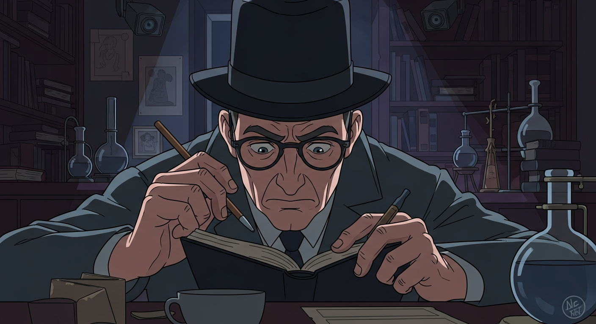
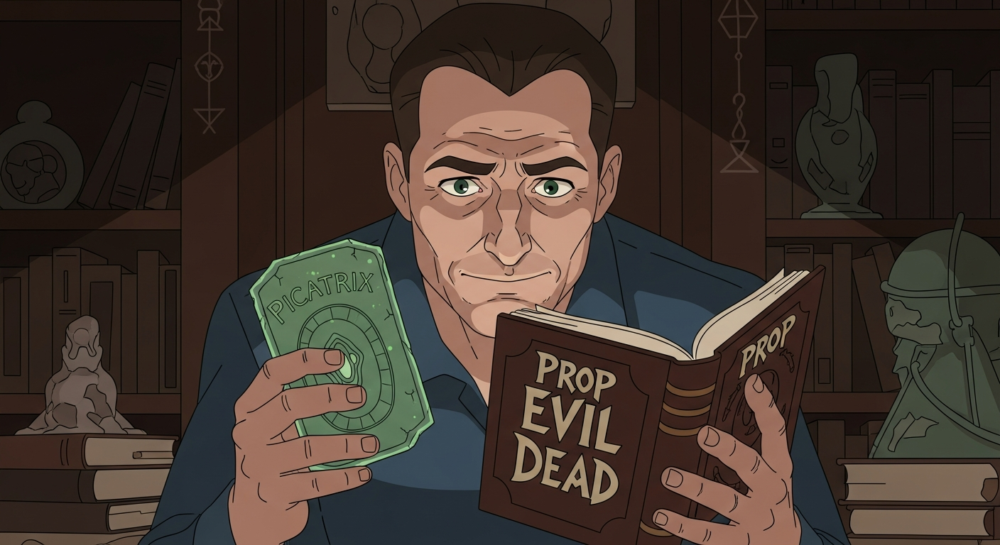

Dr. Sledge: "Agrippa's *Invisibilia Dei* attempts to systematize divine influences. It's a Renaissance synthesis, a layering of Neoplatonism, Hermeticism, Kabbalah..." Alexander squints, seeing fleeting shapes in the diagram's lines. Later, he asks, "Dr. Sledge, did you see... something in that image?" Sledge sighs. "A trick of the light, I imagine."

Alexander dove deep. Agrippa led to alchemy, revealing whispers of an 'Alchemist's Cipher' tied to a lost *Picatrix* volume. An obscure note: John Dee, *Arthur C. Clark's Mysterious World*, a reclusive antiquarian. The shop owner, a Dee descendant, recognized the symbols—a puzzle box emerged. Solve it, and the Cipher's key, Agrippa's last secret, would be his.